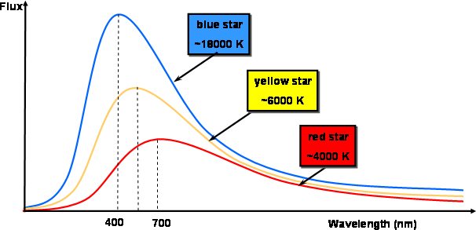
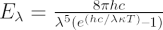
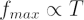
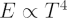

All objects with a temperature above absolute zero (0 K, -273.15 oC) emit energy in the form of electromagnetic radiation.
A blackbody is a theoretical or model body which absorbs all radiation falling on it, reflecting or transmitting none. It is a hypothetical object which is a “perfect” absorber and a “perfect” emitter of radiation over all wavelengths.
Interactive: Explore blackbody radiation — drag the temperature slider to see how the Planck curve shifts.
The spectral distribution of the thermal energy radiated by a blackbody (i.e. the pattern of the intensity of the radiation over a range of wavelengths or frequencies) depends only on its temperature.

Credit: Swinburne
The characteristics of blackbody radiation can be described in terms of several laws:
1. Planck’s Law of blackbody radiation, a formula to determine the spectral energy density of the emission at each wavelength (Eλ) at a particular absolute temperature (T).

2. Wien’s Displacement Law, which states that the frequency of the peak of the emission (fmax) increases linearly with absolute temperature (T). Conversely, as the temperature of the body increases, the wavelength at the emission peak decreases.

3. Stefan–Boltzmann Law, which relates the total energy emitted (E) to the absolute temperature (T).

In the image above, notice that:
- The blackbody radiation curves have quite a complex shape (described by Planck’s Law).
- The spectral profile (or curve) at a specific temperature corresponds to a specific peak wavelength, and vice versa.
- As the temperature of the blackbody increases, the peak wavelength decreases (Wien’s Law).
- The intensity (or flux) at all wavelengths increases as the temperature of the blackbody increases.
- The total energy being radiated (the area under the curve) increases rapidly as the temperature increases (Stefan–Boltzmann Law).
- Although the intensity may be very low at very short or long wavelengths, at any temperature above absolute zero energy is theoretically emitted at all wavelengths (the blackbody radiation curves never reach zero).
In astronomy, stars are often modelled as blackbodies, although it is not always a good approximation. The temperature of a star can be deduced from the wavelength of the peak of its radiation curve.
In 1965, the cosmic microwave background radiation (CMBR) was discovered by Penzias and Wilson, who later won the Nobel Prize for their work. The radiation spectrum was measured by the COBE satellite and found to be a remarkable fit to a blackbody curve with a temperature of 2.725 K and is interpreted as evidence that the universe has been expanding and cooling for about 13.7 billion years. A more recent mission, WMAP, has measured the spectral details to much higher resolution, finding tiny temperature fluctuations in the early Universe which ultimately led to the large-scale structures we see today.